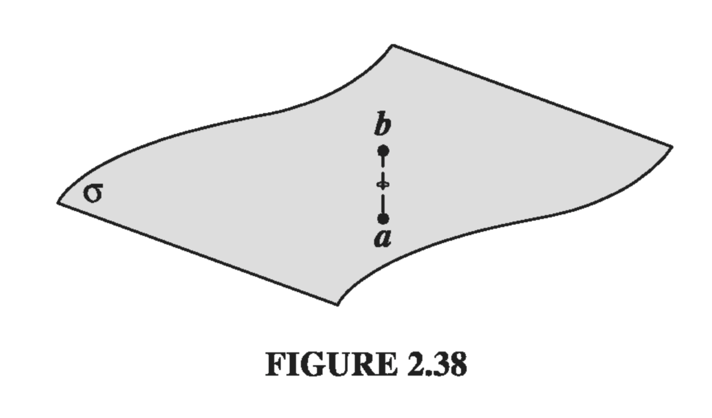
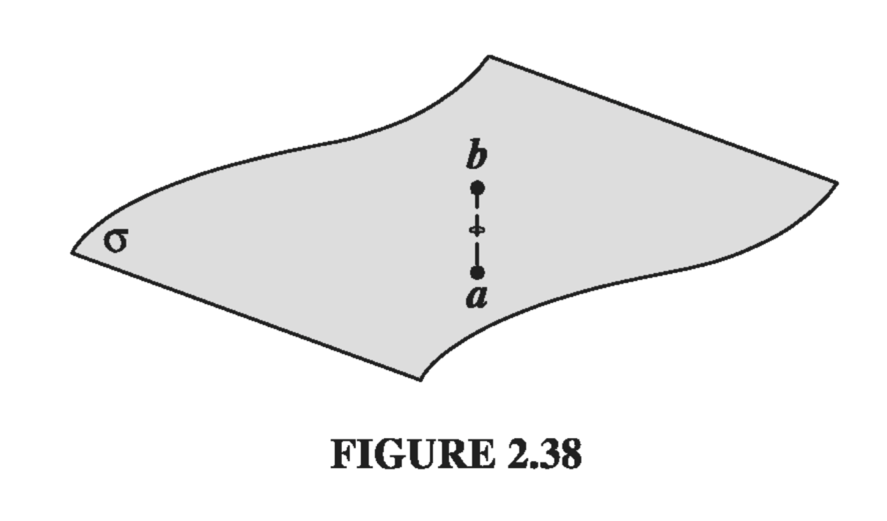

2.3: Electric Potential#
2.3.1: Introduction to Potential#
The electric field E is not just any old vector function. It is a very special kind of vector function: one whose curl id zero. \( \vec{E} = y \hat{x} \) , for example, could not possibly be an electrostatic field; no set of charges, regardless of their sizes and positions, could ever produce such a field. We’re going to exploit this special property of electric fields to reduce a vector problem (finding E) to a much simpler scalar problem. The first theorem in Sect 1.6.2 asserts that any vector whose curl is zero is equal to the gradient of some scalar. What I’m going to do now amounts to a proof of that claim, in the context of electrostatics.

Because \( \nabla \times \vec{E} = 0\) , the line integral of E around any closed loop is zero (that follows from Stokes’ theorem). Because \( \oint \vec{E} \cdot \mathrm{d}{\vec{l}} = 0 \), the line integral of E from point a to point b is the same for all paths (otherwise you could go out along path (i) and return along path (ii) - Fig 2.30 - and obtain \( \oint \vec{E} \cdot \mathrm{d}{\vec{l}} \neq 0 \) ). Because the line integral is independent of path, we can define a function
Here \( O \) is some standard reference point on which we have agreed beforehand; V then depends only on the point \( \vec{r} \). It is called the electric potential.
The potential difference between two points a and b is
Now, the fundamental theorem for gradients states that
so
Since, finally, this is true for any points a and b, the integrands must be equal:
Equation (100) is the differential version of (98); it says that the electric field is the gradient of a scalar potential, which is what we set out to prove.
Notice the subtle but crucial role played by path independence (or, equivalently, the fact that \( \nabla \times \vec{E} = 0 \) ) in this argument. If the line integral of E depended on the path taken, then the “definition” of V (98) would be nonsense. It simply would not define a function, since changing the path would alter the value of \( V(\vec{r}) \). By the way, don’t let the minus sign in (100) distract you; it carries over from (98) and is largely a matter of convention.
2.3.3: Poisson’s Equation and Laplace’s Equation#
We found in Sect 2.3.1 that the electric field can be written as the gradient of a scalar potential
The question arises, what do the divergence and curl of E,
look like, in terms of V? Well, \( \nabla \cdot {\vec{E}} = \nabla \cdot (-\nabla {V}) = -\nabla^2{V} \), so, apart from that persistent minus sign, the divergence of E is the Laplacian of V. Gauss’s law, then, says
This is known as Poisson’s equation. In regions where there is no charge, so \( \rho = 0 \), Poisson’s equation reduces to Laplace’s equation,
We’ll explore this equation more fully in Chapter 3.
So much for Gauss’s law. What about the curl law? This says that
But that’s no condition on V - curl of gradient is always zero. Of course, we used the curl law to show that E could be expressed as the gradient of a scalar, so it’s not really surprising that this works out: \( \nabla \times {\vec{E}} = 0 \) permits our definition of V; in return, \( \vec{E} = - \nabla {V} \) guarantees \( \nabla \times {\vec{E}} = 0 \). It only takes one differential equation (Poisson’s) to determine V, because V is a scalar. For \( \vec{E} \) we needed two, the divergence and the curl.
2.3.4: The potential of a Localized Charge Distribution#
I defined V in terms of \( \vec{E} \eqref{2.21} \). Ordinarily, though, it’s E that we’re looking for (if we already knew E, there wouldn’t be much point in calculating V). The idea is that it might be easier to get V first, and then calculate E by taking the gradient. Typically, then, we know where the charge is (that is, we know \( \rho \)), and we want to find V. Now, Poisson’s equation relates V and \( \rho \), but unfortunately it’s “the wrong way round”: it would give us \( \rho \) if we knew V, whereas we want V, knowing \( \rho \). What we must do, then, is “invert” Poisson’s equation. That’s the program for this section, although I shall do it by roundabout means, beginning, as always, with a point charge at the origin.
The electric field is \( \vec{E} = (1 / 4 \pi \epsilon_0)(1 / r^2) \hat{r} \), and \( \mathrm{d}{\vec{l}} = \mathrm{d}{r} \hat{r} \), and \( \mathrm{d}{\vec{l}} = \mathrm{d}{r} \hat{r} + r \mathrm{d}{\theta} \hat{\theta} + r \sin \theta \mathrm{d}{\theta} \hat{\phi} \), so
Setting the reference point at infinity, the potential of a point charge q at the origin is
(You see here the advantage of using infinity for the reference point: it kills the lower limit on the integral.) Notice the sign of V; presumably the conventional minus sign in the definition was chosen in order to make the potential of a positive charge come out positive. It is useful to remember that regions of positive charge are potential “hills,” and electric field points “downhill” from plus toward minus.

In general, the potential of a point charge q is
where \( \Delta r \), as always, is the distance from \( q \) to \( \vec{r} \) (Fig 2.32). Invoking the superposition principle, then, the potential of a collection of charges is
or, for a continuous distribution,
This is the equation we were looking for, telling us how to compute V when we know \( \rho \); it is, if you like, the “solution” to Poisson’s equation, for a localized charge distribution. Compare (101) with the corresponding formula for the electric field in terms of \( \rho \):
The main point is that the pesky unit vector \( \hat{\Delta r } \) is gone, so there is no need to fuss with components. The potentials of line and surface charges are
I should warn you that everything in this section is predicated on the assumption that the reference point is at infinity. This is hardly apparent in (101), but remember that we got the equation from the potential of a point charge at the origin, \( (1/4 \pi \epsilon_0) (q / r) \), which is valid only when \( \mathscr{O} = \infty \). If you try to apply these formulas to one of those artificial problems in which the charge itself extends to infinity, the integral will diverge.
2.3.5: Boundary Conditions#
In the typical electrostatic problem you are given a source charge distribution \( \rho \), and you want to find the electric field \( \vec{E} \) it produces. Unless the symmetry of the problem allows a solution by Gauss’s law, it is generally to your advantage to calculate the potential first, as an intermediate step. These are the three fundamental quantities of electrostatics: \( \rho \), \( \vec{E} \), and \( V \). We have, in the course of our discussion, derived all six formulas interrelating them. These equations are neatly summarized in Fig. 2.35. We began with just two experimental observations: (1) the principle of superposition - a broad general rule applying to all electromagnetic forces, and (2) Coulomb’s law - the fundamental law of electrostatics. From these, all else followed.

You may have noticed, in studying the exercises in this chapter, that the electric field always undergoes a discontinuity when you cross a surface charge \( \sigma \). In fact, it is a simple matter to find the amount by which E changes at such a boundary. Suppose we draw a wafer-thin Gaussian pillbox, extending just barely over the edge in each direction (Fig. 2.36). Gauss’s law says that
 where A is the area of the pillbox lid. If \( \sigma \) varies from point to point or the surface is curved, we can simply pick A to be extremely small. Now, the sides of the pillbox contribute nothing to the flux, in the limit as the thickness \( \epsilon \) goes to zero, so we are left with
where A is the area of the pillbox lid. If \( \sigma \) varies from point to point or the surface is curved, we can simply pick A to be extremely small. Now, the sides of the pillbox contribute nothing to the flux, in the limit as the thickness \( \epsilon \) goes to zero, so we are left with
where \( E_{above}^{\perp} \) denotes the component of \( \vec{E} \) that is perpendicular to the surface immediately above, and \( E_{below} ^{\perp} \) is the same, only just below the surface. For consistency, let “upward” be the positive direction for both. Conclusion: the normal component of \( \vec{E} \) is discontinuous by an amount \( \sigma / \epsilon_0 \) at any boundary. In particular, where there is no surface charge, \( \vec{E}^{\perp} \) is continuous, as for instance at the surface of a uniformly charged solid sphere.
The tangential component of \( \vec{E} \), by contrast, is always continuous. For if we apply Eq. 2.19,
to the thin rectangular loop of Fig 2.37, the ends give nothing (as \( \epsilon \rightarrow 0 \)), and the sides give \( (E_{above} ^{\parallel} l - E_{below} ^{\parallel} l) \), so
where \( \vec{E}^{\parallel} \) stands for the components of \( \vec{E} \) parallel to the surface.
The boundary conditions on \( \vec{E} \) (Eqs. (102) and (103)) can be combined into a single formula:
where \( \hat{n} \) is a unit vector perpendicular to the surface, pointing from “below” to “above.”
 

The potential, meanwhile, is continuous across any boundary (Fig 2.38), since
as the path length shrinks to zero, so too does the integral
However, the gradient of V inherits the discontinuity in \( \vec{E} \), since \( \vec{E} - \nabla {V} \), so
or more conveniently
where
denotes the normal derivative of V (that is, the rate of change in the direction perpendicular to the surface).
Please note that these boundary conditions relate the fields and potentials just above and just below the surface. For example, the derivatives in (105) are the limiting values as we approach the surface from either side.
2.3.2: Comments on Potential#
The name. The word “potential” is a hideous misnomer because it inevitably reminds you of potential energy. This is particularly insidious, because there is a connection between “potential” and “potential energy,” as you will see in Sect 2.4. I’m sorry that it is impossible to escape this word. The best I can do is to insist once and for all that “potential” and “potential energy” are completely different terms and should, by all rights, have different names. Incidentially, a surface over which the potential is constant is called an equipotential.
Advantage of the potential formulation. If you know V, you can easily get E - just take the gradient: \( \vec{E} =- \nabla {V} \). This is quite extraordinary when you stop to think about it, for E is a vector quantity (three components), but V is a scalar (one component). How can one function possibly contain all the information that three independent functions carry? The answer is that the three components of E are not really as independent as they look; in fact, they are explicitly interrelated by the very condition we started with,\( \nabla \times \vec{E} = 0 \). In terms of components,
This brings us back to my observation at the beginning of Sect 2.3.1: E is a very special kind of vector.What the potential formulation does is to exploit this feature to maximum advantage, reducing a vector problem to a scalar one, in which there is no need to fuss with components.
The reference point \( \mathscr{O} \). There is an essential ambiguity in the definition of potential, since the choice of reference point \( \mathscr{O} \) was arbitrary. Changing reference points amounts to adding a constant K to the potential:
where K is the line integral of E from the old reference point \( \mathscr{O} \) to the new one \( \mathscr{O}' \). Of course, adding a constant to V will not affect the potential difference between two points, since the K’s cancel out. Nor does the ambiguity affect the gradient of V:
since the derivative of a constant is zero. That’s why all such V’s, differing only in their choice of reference point, correspond to the same field E
Potential as such carries no real physical significance, for at any given point we can adjust its value at will by suitable relocation of \( \mathscr{O} \). In this sense, it is rather like altitude: if I ask you how high Denver is, you will probably tell me its height above sea level, because that is a convenient and traditional reference point. But we could as well agree to measure altitude above Washington, DC, or Greenwich, or wherever. That would add (or rather, subtract) a fixed amount from all our sea-level readings, but it wouldn’t change anything about the real world. The only quantity of interest is the difference in altitude between two points, and that is the same whatever your reference level.
Having said this, however, there is a “natural” spot to use for \( \mathscr{O} \) in electrostatics - analogous to sea level for altitude - and that is a point infinitely far from the charge. Ordinarily, then, we s”set the zero of potential at infinity.” (Since \( V(\mathscr{O}) = 0 \), choosing a reference point is equivalent to selecting a place where \( V \) is to be zero.) But I must warn you that there is one special circumstance in which this convention fails: when the charge distribution itself extends to infinity. The symptom of trouble, in such cases, is that the potential blows up. For instance, the field of a uniformly charged plane is \( (\sigma / 2 \epsilon_0) \hat{n} \), as we found in Ex 2.5; if we naively put \( \mathscr{O} = \infty \), then the potential at height z above the plane becomes
The remedy is simply to choose some other reference point (in this example you might use a point on the plane). Notice that the difficulty occurs only in textbook problems; in “real life” there is no such thing as a charge distribution that goes on forever, and we can always use infinity as our reference point.
Potential obeys the superposition principle. The original superposition principle pertains to the force on a test charge Q. It says that the total force on Q is the vector sum of the forces attributable to the source charges individually:
Dividing through by Q, we see that the electric field, too, obeys the superposition principle:
Integrating from the common reference point to \( \vec{r} \), it follows that the potential also satisfies such a principle:
That is, the potential at any given point is the sum of the potentials due to all the source charges separately. Only this time it is an ordinary sum, not a vector sum, which makes it a lot easier to work with.
Units of Potential. In our units, force is measured in newtons and charge in coulombs, so electric fields are in newtons per coulomb. Accordingly, potential is newton-meters per coulomb, or joules per coulomb. A joule per coulomb is a volt.